마고 타종 사용법
시간표를 만들면 정한 시각에 종이 울려요. 먼저 어느 기기에서 소리를 낼지 정해 주세요.
처음 시작하기
- PC는 통합 클라우드에서 열어요.
PC 통합 클라우드의 → 마고 타종 설치 → 열기를 눌러요. 실행 파일을 직접 켰을 때 ‘통합 클라우드에서 켜 주세요’가 나오면 이 순서로 열어요.
- 종을 울릴 기기를 정해요.
→ 이 기기에서 종 울리기를 확인해요. 종을 울릴 PC에서는 켜고, 시간표만 볼 PC·휴대폰에서는 꺼요.
- 홈에서 다음 종을 확인해요.
의 다음 종과 세트 이름을 봐요. 일정이 없다면 시간표에서 일정을 추가해요.
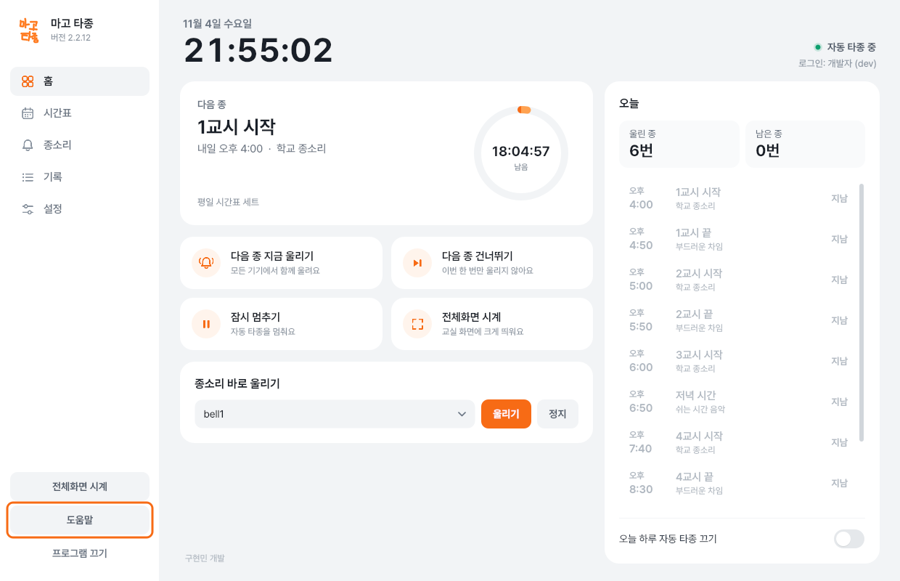
주황 테두리의 도움말은 왼쪽 메뉴 아래에 있어요.
시간표·세트·종소리·오늘 설정·울린 기록은 같은 아이디로 로그인한 PC와 휴대폰끼리 맞춰져요. 같은 학원이라도 서로 다른 아이디의 타종 시간표가 자동으로 같아지는 것은 아니에요.
홈에서 오늘 종 확인하기
의 ‘다음 종’은 앞으로 울릴 종이에요. ‘오늘’ 목록에서는 울린 종, 앞으로 울릴 종, 건너뛸 종을 봐요.
| 버튼 | 무엇을 하나요? |
|---|---|
| 다음 종 지금 울리기 | 다음 예정 종을 미리 울려요. 그 회차는 원래 시각에 또 울리지 않아요. |
| 다음 종 건너뛰기 | 다음 종을 이번 한 번만 울리지 않아요. 시간표 자체는 남아요. |
| 건너뛰기 취소 | ‘오늘’ 목록에서 건너뛸 종을 다시 정해진 시각에 울리게 해요. 지금 울리는 버튼은 아니에요. |
| 잠시 멈추기 | 자동 타종을 잠시 멈춰요. 다시 울리려면 다시 시작하기를 눌러요. |
| 오늘 하루 자동 타종 끄기 | 오늘만 자동 타종을 쉬어요. 오늘 다시 울리려면 이 설정을 꺼요. |
시간표와 관계없이 소리를 내려면 ‘종소리 바로 울리기’에서 소리를 고르고 울리기를 눌러요. 정지로 멈출 수 있어요.
시간표·세트 관리
일정 하나 추가하기
- 시간표를 열고 세트를 확인해요.
왼쪽 를 눌러요. 위쪽 세트 목록의 이름을 먼저 확인해요.
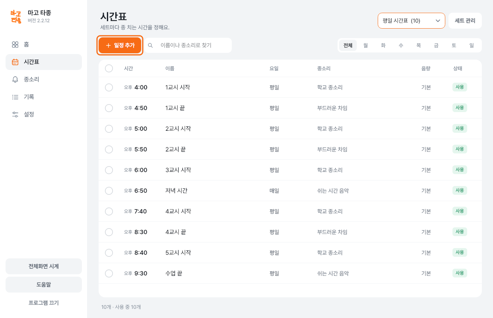
주황 테두리의 일정 추가로 새 종을 만들어요. 세트를 고르면 그 세트가 실제로 울리는 세트가 돼요.세트 목록은 보기만 바꾸는 기능이 아니에요. 다른 세트로 바꾼 뒤에는 홈에서 다음 종을 꼭 확인해요. - 일정 추가를 눌러요.
일정 추가에서 이름·요일·시간·종소리·음량을 정해요. 오전·오후와 요일을 확인하고 저장을 눌러요.
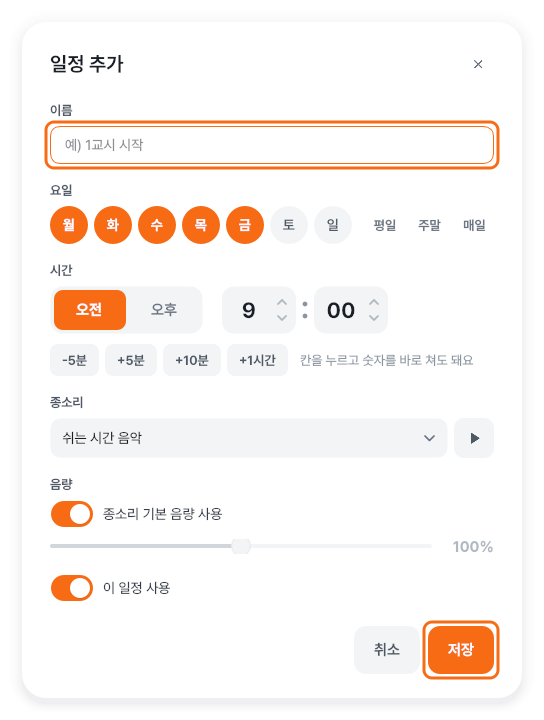
주황 테두리의 항목을 채우고 저장해요. - 저장한 일정을 확인해요.
시간표에 날짜가 아니라 반복할 요일과 시각이 맞게 들어갔는지 봐요. 으로 가서 다음 종도 확인해요.
일정 고치기·한 번에 바꾸기
- 고칠 일정을 선택해요.
일정 하나를 선택하고 아래 막대의 수정을 눌러요. 여러 개를 바꾸려면 해당 줄의 체크칸을 골라요.
- 필요한 항목만 바꿔요.
아래 막대의 한 번에 바꾸기를 눌러 요일·시간 옮기기·종소리·음량 등을 정해요. 적용할 내용과 선택한 개수를 확인해요.
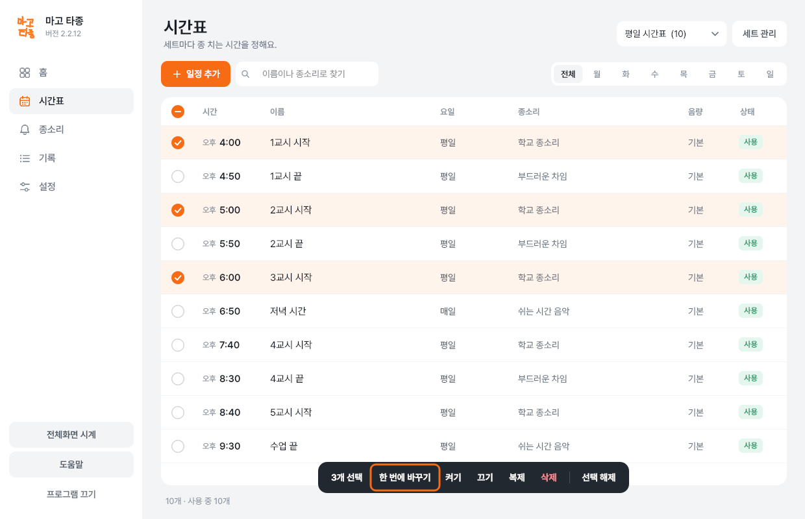
주황 테두리의 한 번에 바꾸기가 선택한 일정들에 적용돼요.
켜기·끄기로 선택한 일정을 사용할지 정해요. 복제는 비슷한 일정을 만들 때 써요. 삭제는 일정을 지우므로 이번만 쉬려면 홈의 건너뛰기를 써요.
평소·시험 기간처럼 세트 나누기
세트는 시간표를 묶어 두는 이름이에요. 세트 관리에서 새 세트 만들기, 지금 세트 복제, 이름 바꾸기를 할 수 있어요.
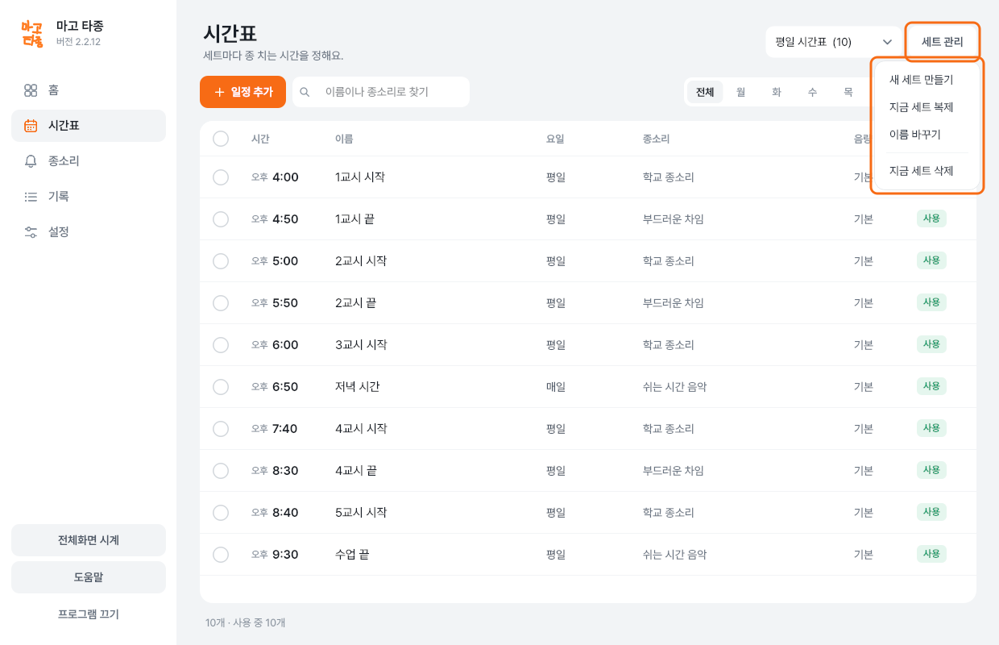
새 세트를 만들거나 복제한 뒤에도 현재 선택된 세트를 확인해요. 지금 선택된 세트가 울려요.
종소리 추가·다듬기
컴퓨터에 있는 소리 파일 넣기
- 종소리 화면을 열어요.
왼쪽 → 파일 추가를 눌러 소리 파일을 골라요.
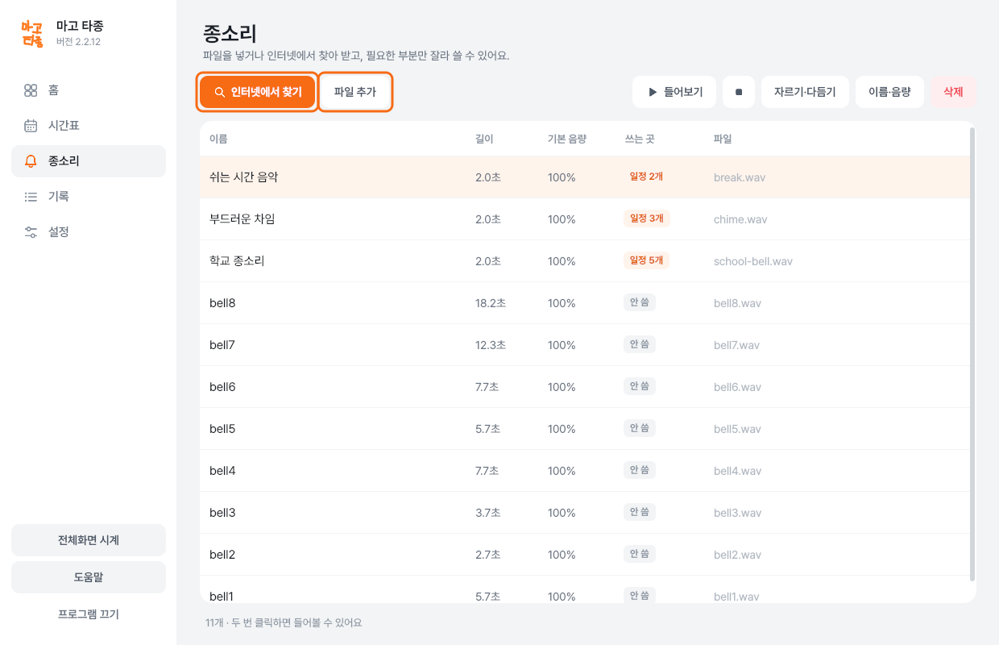
주황 테두리의 파일 추가·인터넷에서 찾기에서 소리를 넣어요. - 들어 보고 음량을 맞춰요.
소리를 선택하고 들어보기를 눌러요. 이름이나 크기를 바꾸려면 이름·음량을 눌러요.
인터넷에서 찾기
- 찾을 말을 넣어요.
인터넷에서 찾기를 누르고 검색어를 넣어 검색해요.
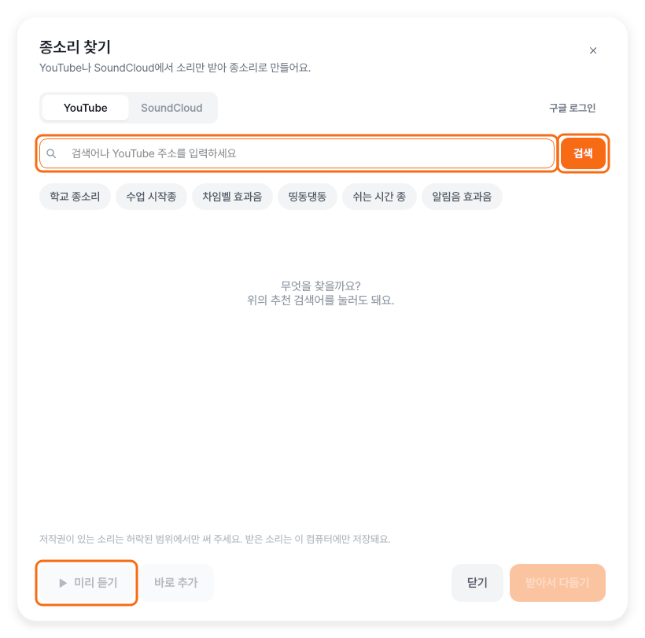
주황 테두리의 검색과 미리 듣기로 원하는 소리를 골라요. - 소리를 확인하고 추가해요.
미리 듣기로 확인한 뒤 바로 추가를 눌러요. 추가한 소리는 시간표의 종소리 항목에서 골라야 일정에 사용돼요.
너무 긴 소리를 짧게 만들기
에서 소리를 고르고 자르기·다듬기를 눌러요. 쓸 구간을 정하고 들어 본 뒤 저장해요. 시작과 끝이 너무 갑작스러우면 소리가 서서히 커지거나 작아지게 조절할 수 있어요.
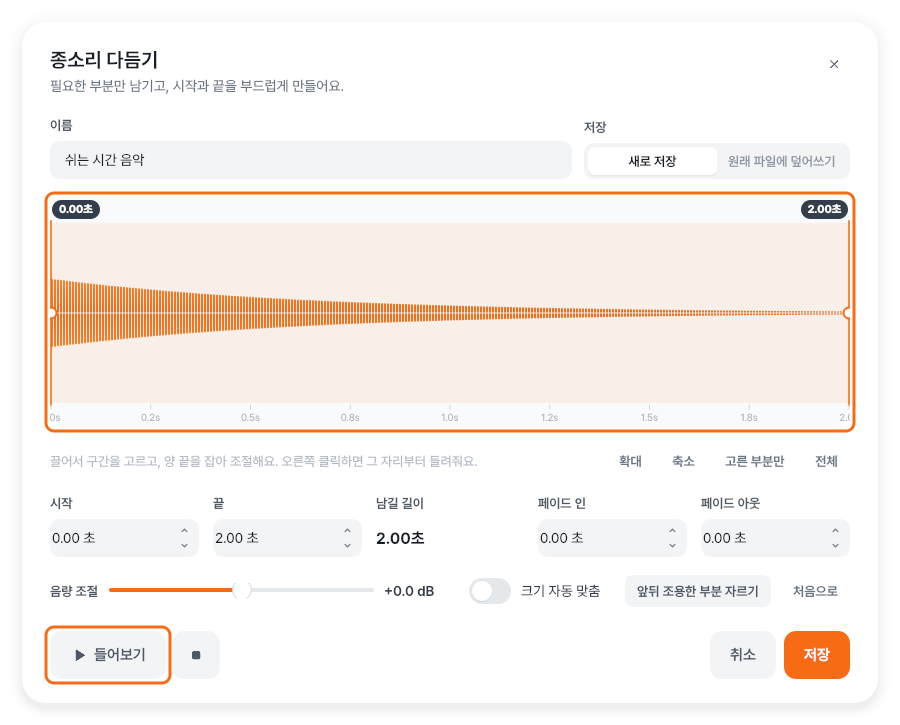
울린 기록 보기
에서 기간과 결과를 골라요. 언제 어떤 종이 울렸는지, 왜 건너뛰었는지 확인할 수 있어요. PC에서는 엑셀로 내보내기로 기록을 파일에 담을 수 있어요.
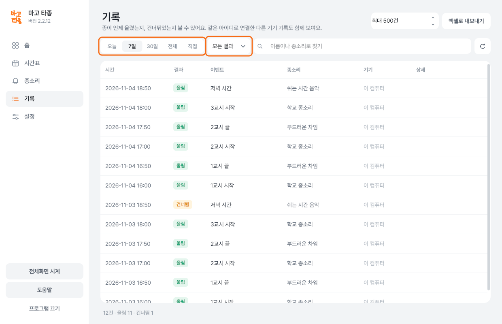
종이 안 울렸다면 기록과 함께 의 잠시 멈춤·오늘 하루 끄기, 의 기기별 종 울리기를 확인해요.
기기·시계·백업 설정
이 기기에서 종 울리기
→ 이 기기에서 종 울리기를 끄면 이 기기는 시간표만 같이 보고 소리는 내지 않아요. 다른 기기의 종 울리기 설정까지 꺼지는 것은 아니에요.
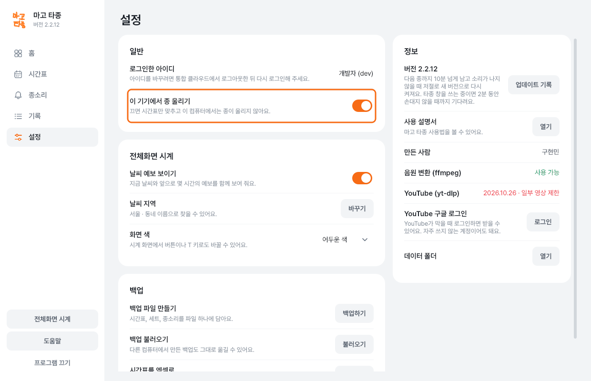
교실에 큰 시계 띄우기
의 전체화면 시계를 눌러요. 의 ‘전체화면 시계’에서 날씨 지역·날씨 예보 보이기·화면 색을 정해요. 화면 색은 밝게 또는 어둡게를 고르는 것이에요.
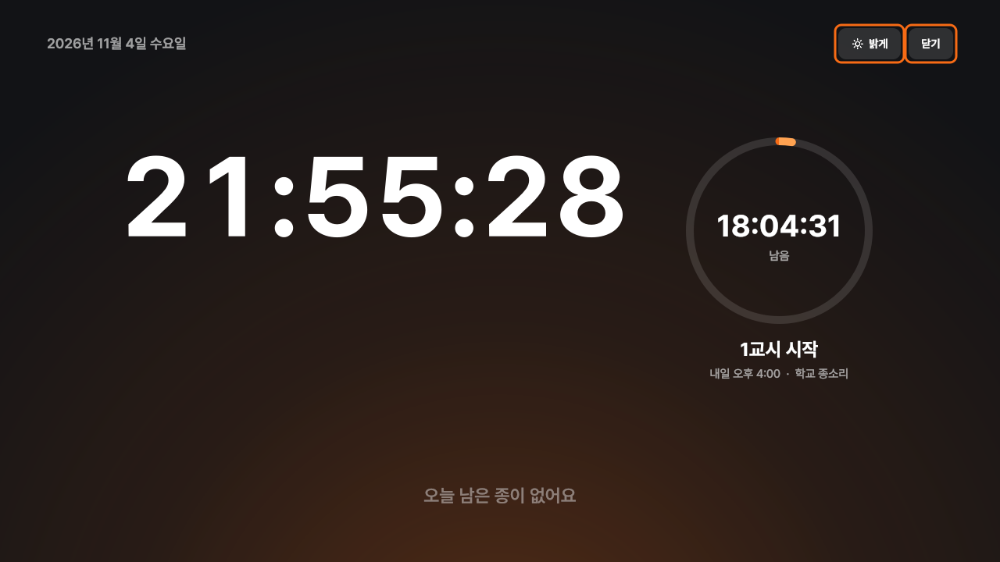
백업 파일 만들기·불러오기
백업은 자료를 따로 보관할 파일로 만드는 일이에요. 의 ‘백업’에서 백업하기를 누르면 시간표·세트·종소리를 파일 하나로 담아요. 다른 기기의 파일을 가져오려면 불러오기를 눌러요.
매일 자동으로 켜기·완전히 끄기
PC 통합 클라우드의 마고 타종 카드 ⋯ → 윈도우 시작 시 실행을 켜면 컴퓨터를 켤 때 함께 시작해요. 자동 타종을 쓰려면 컴퓨터가 켜져 있고 잠들지 않도록 해요.
타종 창을 닫아도 트레이에서 계속 돌아요. 완전히 끄려면 화면 오른쪽 아래 시계 옆 마고 타종 아이콘의 메뉴에서 프로그램 끄기를 눌러요. 통합 클라우드 트레이의 종료와는 다른 메뉴예요.
안드로이드 휴대폰에서 쓰기
- 휴대폰 브라우저에서 설치 파일을 받아요.
mago.milky.kr에 원장님·선생님 계정으로 로그인해요. 의 ‘마고 타종 (안드로이드)’ → 내려받기를 눌러요. 받은 파일을 열고, 필요하면 ‘알 수 없는 앱 설치’를 허용해요.
- PC와 같은 아이디로 로그인해요.
휴대폰의 마고 타종 앱을 열어 통합 클라우드 아이디·비밀번호를 넣어요. 서버 주소는
https://mago.milky.kr이에요. 시간표만 보려면 이 기기에서 종 울리기를 꺼요.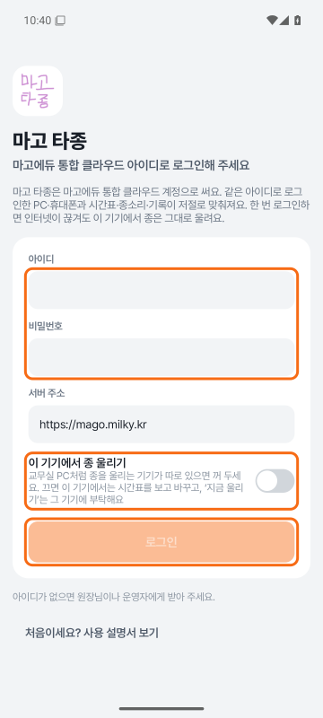
주황 테두리의 로그인 정보와 이 기기에서 종 울리기를 확인해요. - 정확히 울리게 하는 권한을 정해요.
의 ‘정확히 울리게 하기’를 찾아요. ‘알람 및 리마인더’의 허용하기를 누르고, 휴대폰 설정에서 허용해요.
앱으로 돌아와 ‘배터리 사용량 최적화 제외’의 제외하기도 눌러요. 휴대폰 설정에서 제외한 뒤 앱으로 돌아와 ‘허용됨’·‘제외됨’인지 확인해요.
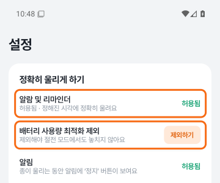
주황 테두리의 알람 및 리마인더·배터리 사용량 최적화 제외를 모두 확인해요. 두 설정을 해야 제시간에 울릴 수 있어요.권한이 없거나 절전으로 앱이 멈추면 종을 놓칠 수 있어요. 휴대폰에서 종을 울릴 때는 음량도 확인해요. - 홈에서 다음 종을 확인해요.
에서 PC와 같은 세트와 시간이 보이는지 확인해요. 수동 타종은 시간표와 관계없이 소리를 울릴 때 써요.
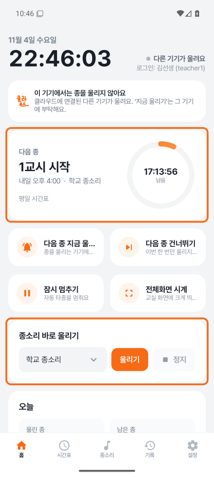
주황 테두리의 홈 동작에서 다음 종을 확인해요. - 휴대폰에서도 시간표를 고쳐요.
→ 일정 추가에서 이름·요일·시간·종소리를 정해요. 세트는 세트 관리로 만들거나 고쳐요.
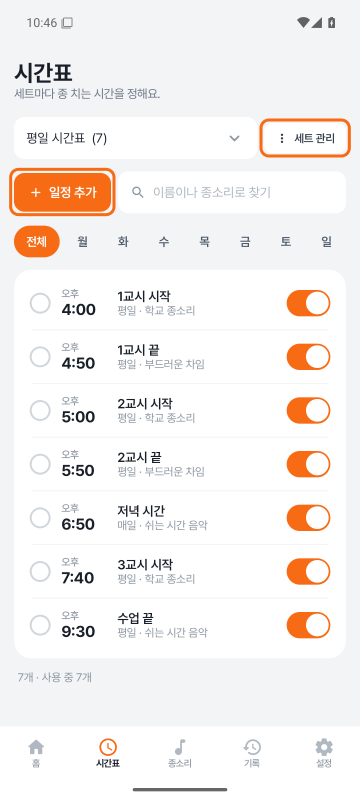
주황 테두리의 일정 추가·세트 관리에서 시간표를 관리해요. 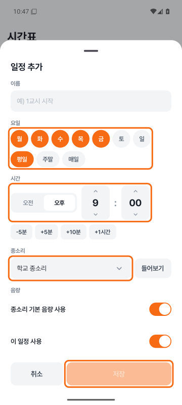
주황 테두리의 요일·시간·종소리를 확인하고 저장해요. 휴대폰에서도 세트를 고르면 울릴 세트가 바뀌어요.같은 아이디의 PC에도 변경이 전달돼요. 바꾼 뒤 다음 종을 확인해요. - 종소리도 확인해요.
에서 등록된 소리를 확인해요. 다른 기기에서 새로 올린 소리는 인터넷에 연결되어야 받아올 수 있어요.
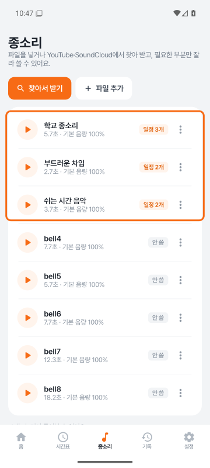
주황 테두리의 종소리 목록에서 사용할 소리를 확인해요.
PC와 다른 점
- PC판은 통합 클라우드 앱에서 열어요. 휴대폰판은 설치한 마고 타종 앱을 직접 열고 통합 클라우드 계정으로 로그인해요.
- 잠시 멈춘 자동 타종을 다시 켜는 버튼은 휴대폰에서 자동 타종 다시 켜기예요.
- 휴대폰의 → ‘업데이트’에서는 새 버전 확인으로 확인하고, 새 버전이 있으면 업데이트해요.
- 도움말은 → ‘정보’ → 사용 설명서예요. 로그인 화면에는 처음이세요? 사용 설명서 보기가 있어요.
한 번 로그인하고 시간표·소리를 받아 두면 인터넷이 끊겨도 이 기기의 종은 계속 울려요. 다른 기기에서 바꾼 내용은 다시 연결된 뒤 맞춰져요.